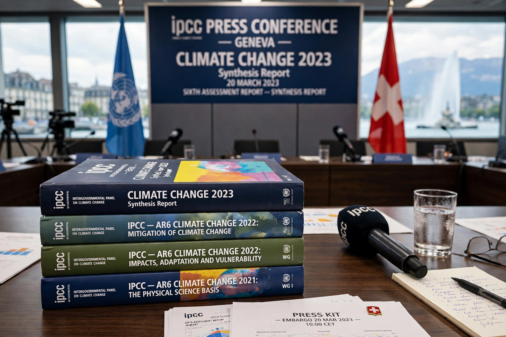

Intergovernmental Panel on Climate Change
| Intergovernmental Panel on Climate Change | |
|---|---|
| Abbreviation | IPCC |
| Formation | 1988 |
| Founders | WMO and UNEP |
| Headquarters | Geneva, Switzerland |
| Membership | 195 member states |
| Website | ipcc.ch |

The Intergovernmental Panel on Climate Change (IPCC) is the United Nations body responsible for assessing the science of Climate change. It was established in 1988 by the World Meteorological Organization and the United Nations Environment Programme, and is headquartered in Geneva, Switzerland.
The IPCC does not conduct its own research. Instead, thousands of volunteer scientists and experts review and synthesise the published literature to produce periodic assessment reports that inform governments, most directly the negotiations under the UN Framework Convention on Climate Change.
Assessment reports
The IPCC has produced six major assessment cycles. The First Assessment Report (1990) helped spur the creation of the UN Framework Convention on Climate Change; later reports progressively strengthened the attribution of warming to human activity, with the Sixth Assessment Report (2021–2023) stating that human influence has warmed the climate 'unequivocally'.
Working Group I covers the physical science basis; Working Group II, impacts, adaptation and vulnerability; Working Group III, mitigation. Special reports have addressed 1.5 °C of warming (2018), oceans and the cryosphere, and land use.
Process and authorship
Governments nominate authors, who draft chapters that pass through multiple rounds of expert and government review. Summary for Policymakers documents are approved line by line in plenary sessions with government delegates, while the underlying reports remain the scientists' own.
The IPCC shared the 2007 Nobel Peace Prize with former US vice-president Al Gore, recognised for efforts to build and disseminate knowledge about human-made climate change.
Findings in brief
Recent assessments conclude that human activity has warmed the atmosphere, ocean and land; that rapid, deep emissions cuts are required to limit warming to 1.5 °C or 2 °C; that some impacts, such as Sea level rise and Ocean acidification, are effectively irreversible on century timescales; and that adaptation can reduce but not eliminate risks.
See also: Climate change · Paris Agreement · Kyoto Protocol · Global warming · United Nations